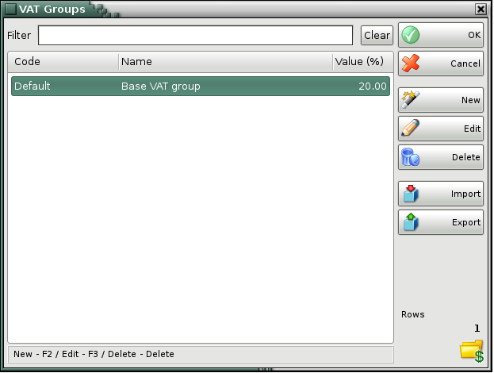

VAT Groups
Use the VAT Groups window to add a new VAT group or to edit the list of VAT groups.

You can use the New, Edit and Delete buttons to add a new VAT group or to edit and delete an existing one. Before you actually edit or delete an existing VAT group, you will be prompted to confirm the action.
The Filter option allows you to quickly position on a particular VAT group by typing all or part of its name. To remove specified filter click on the Clear button.
Use Import button to transfer VAT groups from *.csv fail to IncoPOS. Select a file and click OK button. You may choose which columns to import. Then click OK button again and the VAT groups and their parameters will be added to the table.
Use Export button to transfer VAT groups from IncoPOS to CSV, Excel 97, Web Page or XML data. Select file's type, enter name and point folder where to save it. Click OK button to realize the export. All VAT groups will be transfered.
�2006-2015 Microinvest, All rights reserved